Main Article: Baking mix
A cake is a type of (usually) sweet dessert which is baked.. Originally, it was a bread-like food,
but no longer. Cakes are often made to celebrate special occasions like birthdays or
weddings. There are many kinds of cakes. It can be baked in an oven. Some savory cakes
are made on a griddle or a frying pan..
Cakes are baked from a batter. Batter is made by mixing wet ingredients (like milk and eggs)
with dry ingredients (like sugar and flour). The batter is baked in an oven. This way of baking
is known as the muffin method, because muffins are made this way.
Vegan versions of the same cake abstain from using animal products such as dairy or eggs and instead
substitute them with plant derived products such as nut milk and alginate-lecithin gel.
Just like bread, cakes rise in the oven because they contain many small air bubbles. As cakes rise, the
air bubbles expand. This is why the cake batter expands in the pan (often to twice its original size). There
are two ways of forming the air bubbles, which create different types of cakes. Almost every kind of cake
belongs to one of these families.
These cakes are made with butter or another fat, like vegetable shortening. The common way is to mix the fat and sugar, then add
eggs, and then add flour. The fat should be soft. It should not be hard or liquid. Mixing sugar with fat creates many very small air
bubbles. Most birthday cakes are made this way. Cupcakes are also made this way.
These cakes are not made with solid butter or vegetable shortening. Some of these cakes are
made with melted butter or vegetable oil. The common way is to mix the eggs and sugar, and
then add flour. These cakes are often much taller, lighter and often spongier than creamed fat
cakes. Angelfood cake and chiffon cakes are egg foam cakes. Most grocery stores with
bakeries sell angelfood cakes. Angelfood cakes are made by beating egg whites with sugar.
This traps a lot of tiny air bubbles. The eggs and sugar are mixed with other ingredients.
Then, the cake is baked.
A cake can be decorated with icing (also called "frosting"), chocolate, fruit, and much more. A
layer cake is made by stacking cakes with icing or filling between the layers. Birthday cakes
are sometimes decorated with candles. Cakes can be served with berries or other kinds of
fruit.
A large, rich cake is often called by the French word for "cake": "gâteau" (plural: "gâteaux",
both singular and plural pronounced "GA-toe"). It may have a lot of cream. Some cakes
can have edible paper on the top.
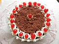
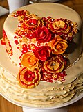
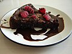
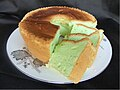
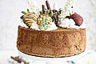
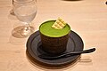
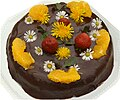
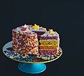
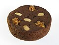
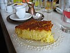
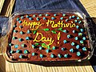
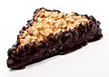